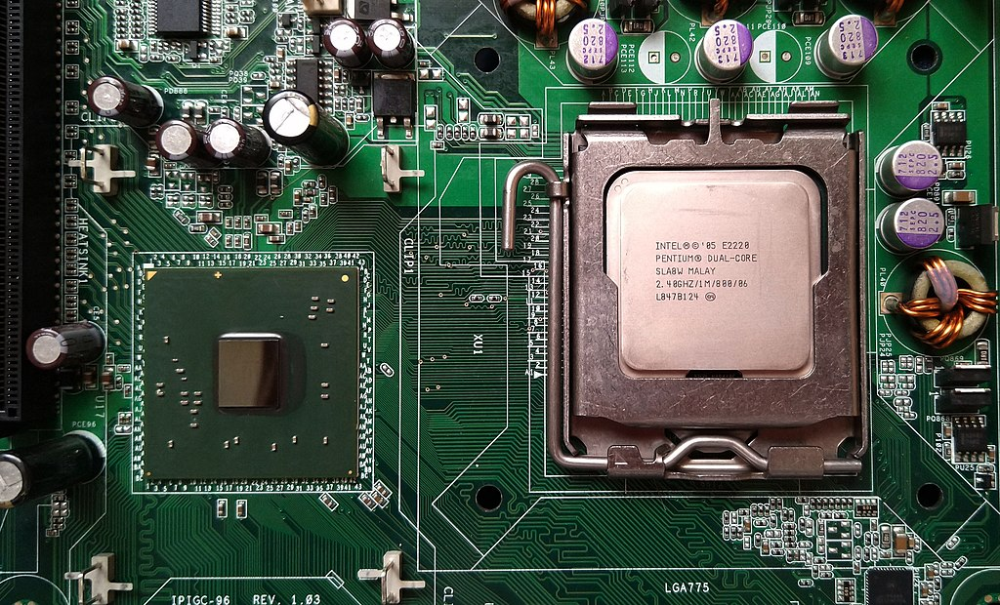

Los componentes y dispositivos del Hardware se dividen en Hardware Básico y Hardware Complementario
- El Hardware Básico: son las piezas fundamentales e imprescindibles para que la computadora funcione como son: Placa base, monitor, teclado y ratón.
- El Hardware Complementario: son todos aquellos dispositivos adicionales no esenciales como pueden ser: impresora, escáner, cámara de vídeo digital, webcam, etc.
Teclado
Es un dispositivo o periférico de entrada, en parte inspirado en el teclado de las máquinas de escribir, que utiliza una disposición de botones o teclas, para que actúen como palancas mecánicas o interruptores electrónicos que envían información a la computadora.

Mouse (Ratón)
Es un dispositivo apuntador utilizado para facilitar el manejo de un entorno gráfico en una computadora. Generalmente está fabricado en plástico y se utiliza con una de las manos. Detecta su movimiento relativo en dos dimensiones por la superficie plana en la que se apoya, reflejándose habitualmente a través de un puntero o flecha en el monitor.

Escáner
Se utiliza para introducir imágenes de papel, libros, negativos o diapositivas. Estos dispositivos ópticos pueden reconocer caractéres o imágenes, y para referirse a este se emplea en ocasiones la expresión lector óptico (de caracteres)
Micrófono
Periférico por el cual transmite sonidos que el ordenador capta y los reproduce, los salva, etc. Se conecta a la tarjeta de sonido.
Webcam
Es una cámara de pequeñas dimensiones. Sólo es la cámara, no tiene LCD. Tiene que estar conectada al PC para poder funcionar, y esta transmite las imágenes al ordenador. Su uso es generalmente para videoconferencias por internet, pero mediante el software adecuado, se pueden grabar videos como una cámara normal y tomar fotos estáticas.

Dispositivos de salida
Monitor
El monitor de computadora es un visualizador que muestra al usuario los resultados del procesamiento de una computadora mediante una interfaz. Hay distintos tipos de monitores y pantallas, solo nombraremos los cuatro principales:
- De rayos catódicos
- Plasma
- Led
- Leds
Impresora
Una impresora es un periférico de ordenador que permite producir una gama permanente de textos o gráficos de documentos almacenados en formato electrónico, imprimiéndolos en medios físicos, normalmente en papel o transparencias, utilizando cartuchos de tinta o tecnología láser.

Componentes internos
Motherboard (Placa base)
Es una parte fundamental para montar cualquier computadora personal de escritorio o portátil o algún dispositivo. Tiene instalados una serie de circuitos integrados, entre los que se encuentra el circuito integrado auxiliar (chipset), que sirve como centro de conexión entre el microprocesador (CPU), la memoria de acceso aleatorio (RAM), las ranuras de expansión y otros dispositivos.
Chipset (Circuito Integrado Auxiliar)
Es la médula espinal de la computadora, integrado en la placa base, hace posible que esta funcione como eje del sistema permitiendo el tráfico de información entre el microprocesador (CPU) y el resto de componentes de la placa base, interconectándolos a través de diversos buses que son: el Northbridge (Puente Norte) y el Southbridge (Puente Sur).
El Northbridge o Puente Norte es un circuito integrado que hace de puente de enlace entre el microprocesador y la memoria además de las tarjetas gráficas o de vídeo AGP o PCI-Express, así como las comunicaciones con el Puente Sur.
El Southbridge o Puente Sur (también conocido como Concentrador de Controladores de Entrada/Salida), es un circuito integrado que coordina dentro de la placa base los dispositivos de entrada y salida además de algunas otras funcionalidades de baja velocidad. El Puente Sur se comunica con la CPU a través del Puente Norte.
Unidad Central de Procesamiento (CPU)

La CPU (Central Processing Unit o Unidad Central de Procesamiento) puede estar compuesta por uno o varios microprocesadores de circuitos integrados que se encargan de interpretar y ejecutar instrucciones , y de administrar, coordinar y procesar datos, es en definitiva el cerebro del sistema de la computadora. además, la velocidad de la computadora depende de la velocidad de la CPU o microprocesador que se mide en Mhz ( unidad de medida de la velocidad de procesamiento). Se divide en varios registros:
- Unidad de Control:La Unidad de Control es la encargada de controlar que las instrucciones se ejecuten, buscándolas en la memoria principal, decodificándolas (interpretándolas) y que después serán ejecutadas en la unidad de proceso.
- Unidad Aritmético-Lógica: Es la unidad de proceso donde se lleva a cabo la ejecución de las instrucciones con operaciones aritméticas y lógicas.
- Unidad de Almacenamiento:La Unidad de Almacenamiento o Memoria guarda todos los datos que son procesados en la computadora y se divide en Memoria Principal y Memoria Secundaria o Auxiliar.
- Memoria Principal o Primaria (RAM - ROM): En la Memoria Principal o Primaria
de la computadora se encuentran las memorias RAM, ROM y CACHÉ.
La Memoria RAM (Random Access Memory o Memoria de Acceso Aleatorio) es un circuito integrado o chip que almacena los programas, datos y resultados ejecutados por la computadora y de forma temporal, pues su contenido se pierde cuando esta se apaga. Se llama de acceso aleatorio - o de acceso directo - porque se puede acceder a cualquier posición de memoria sin necesidad de seguir un orden. La Memoria RAM puede ser leída y escrita por lo que su contenido puede ser modificado.

La Memoria ROM (Read Only Memory o Memoria de sólo lectura) viene grabada en chips con una serie de programas por el fabricante de hardware y es sólo de lectura, por lo que no puede ser modificada - al menos no muy rápida o fácilmente - y tampoco se altera por cortes de corriente. En esta memoria se almacenan los valores correspondientes a las rutinas de arranque o inicio del sistema y a su configuración.
La Memoria Caché es una memoria intermedia, o sea que presenta datos que se encuentran en la memoria RAM pero al estar en la caché se acelera su acceso.

Memoria Secundaria (Discos Duros, Discos Flexibles, Pen Drive, etc.)
La Memoria Secundaria (también llamada Periférico de Almacenamiento) está compuesta por todos aquellos dispositivos capaces de almacenar datos en dispositivos que pueden ser internos como el disco duro, o extraíble como los discos flexibles (disquetes), CDs, DVDs, etc.
- Discos Duros: un disco duro o disco rígido (en inglés Hard Disk Drive, HDD) es un dispositivo de almacenamiento de datos no volátil que emplea un sistema de grabación magnética para almacenar datos digitales. Se compone de uno o más platos o discos rígidos, unidos por un mismo eje que gira a gran velocidad dentro de una caja metálica sellada. Sobre cada plato, y en cada una de sus caras, se sitúa un cabezal de lectura/escritura que flota sobre una delgada lámina de aire generada por la rotación de los discos. La capacidad de los mismos nos indica la cantidad de datos que podemos almacenar en ellos, actualmente medimos su capacidad por Gigabytes y Terabytes, van aproximadamente desde 160 Gb., hasta los 2 Tb. Los discos duros también se diferencian por el tipo de conexión que utilizan, tenemos los PATA (IDE), los SATA, los SATA II y los SATA III.
- Pen Drive : Es una memoria del tipo USB, también denominada flash drive. Es un dispositivo de almacenamiento de datos que incorpora una interfaz USB para conectar a un puerto similar de la computadora quien la reconoce como una unidad mas de almacenamiento. Se trata de un pequeño dispositivo para el almacenamiento de información digital. Algunos modelos utilizan microdrives para el almacenamiento.